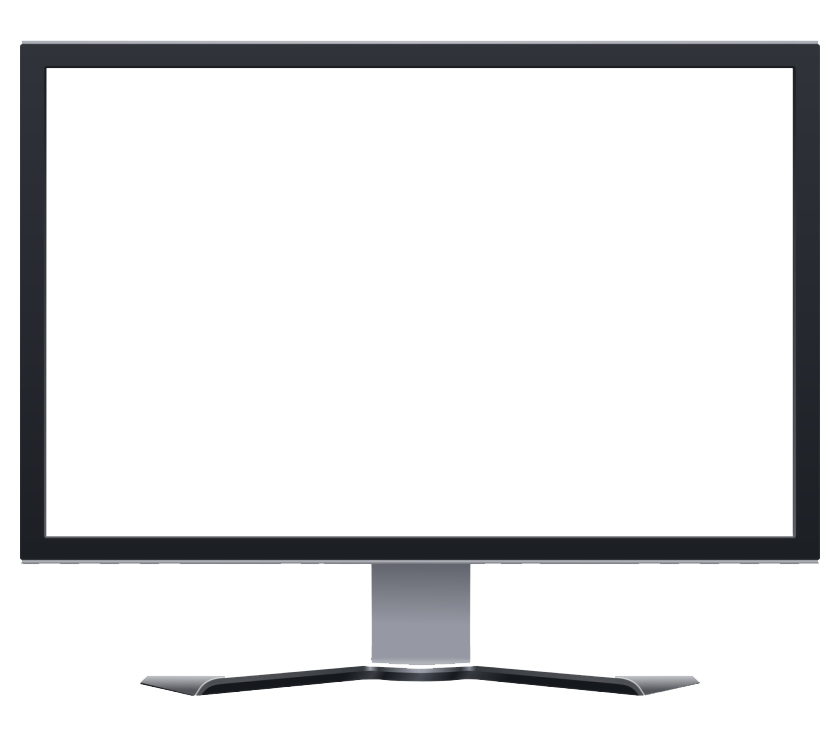

<div class="content">
    <div class="container-fluid">
        <div class="row py-2 mt-4 m-1">
            <mat-card class="main-card">
                <mat-card-content>
                    <div class="row mt-3">
                        <!-- Use *ngFor to dynamically generate screens based on backend data -->
                        <div class="col-md-3 col-sm-12 mb-2" *ngFor="let screen of ScreenOptions">
                            <div class="card sub-card">
                                <div class="card-body d-flex flex-column align-items-center justify-content-center">
                                    <!-- Material Icon as Logo -->
                                    

                                    <!-- Button below the Logo, use data from backend for dynamic content -->
                                    <button style="background-color: #000; color: white; border-radius: 10px ;" mat-raised-button>{{ screen.ScreenName }}</button>
                                </div>
                            </div>
                        </div>
                    </div>
                </mat-card-content>
            </mat-card>
        </div>
    </div>
</div>
